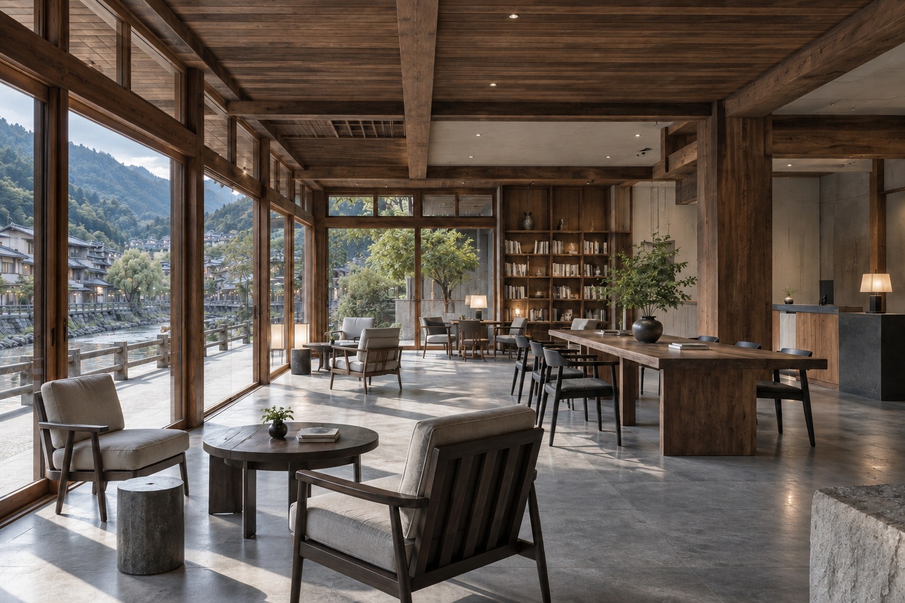
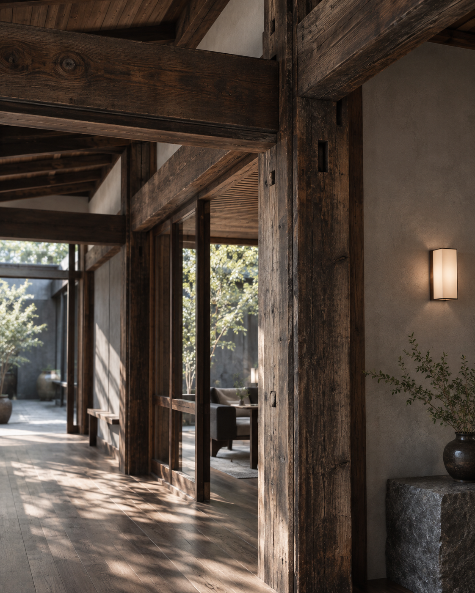
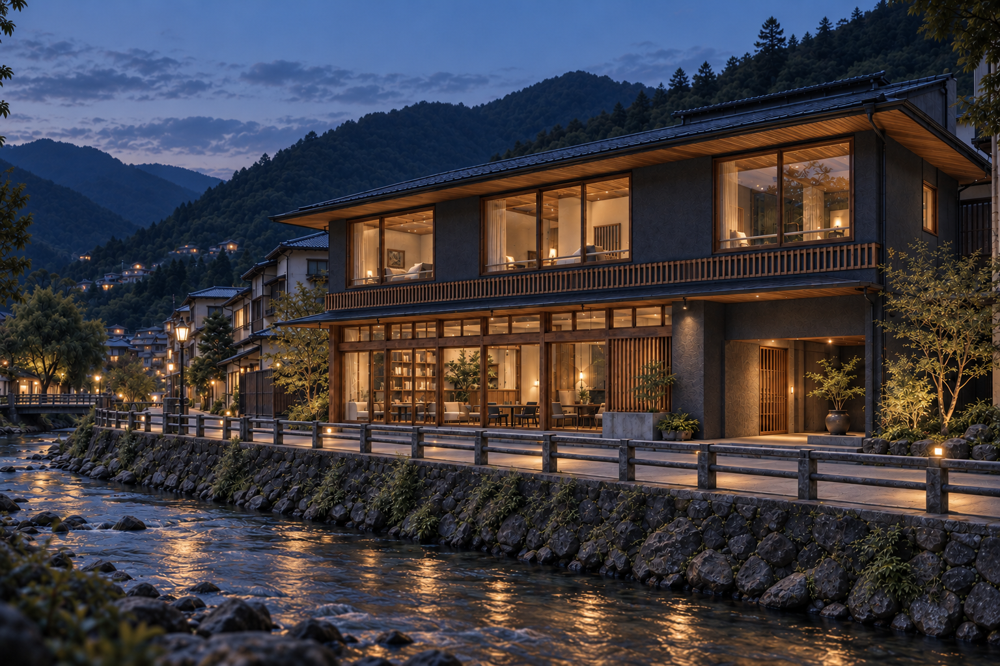

何もしない一泊を、
ちゃんとつくる。
1968年に建てられた旅館を、
残すものを選びながら8室の宿へ。
1968 — 2026
00 — INTRODUCTION
残すものを選ぶ。
古いものをすべて残すのでも、
すべて新しくするのでもない。
残すもの、変えるもの、
なくすものを選び、
現在の滞在へ継ぎ直す。
01 — STAY
8 rooms.
Less, but more.


EDIT → SPACE → TIME
減らした分だけ、
残ったものがある。
12 rooms / before 08 rooms / now
— — SPACE
客室ではない
場所にも、
居場所を。


部屋を減らして生まれた場所を、
何もしないための共有空間へ。
02 — STORY
古いままでも、
新しいだけでも
ない。


03 — EXPERIENCE
一日を、
急がない。


歩く、浸かる、読む。
予定を増やさないための過ごし方。
LOCATION
山と川のあいだに
ある、小さな温泉地。

